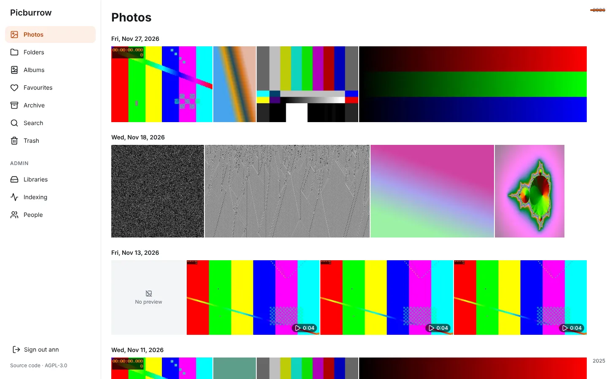
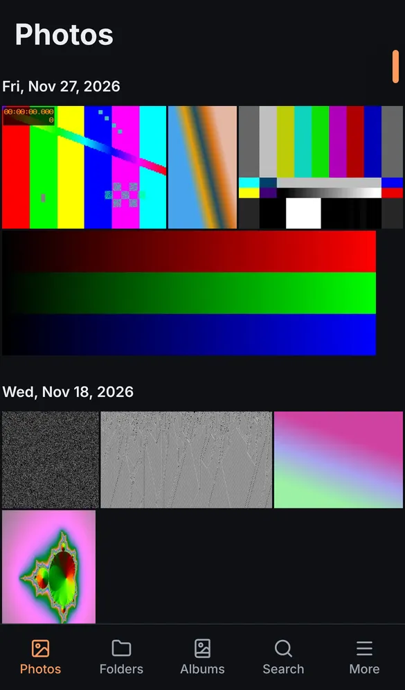
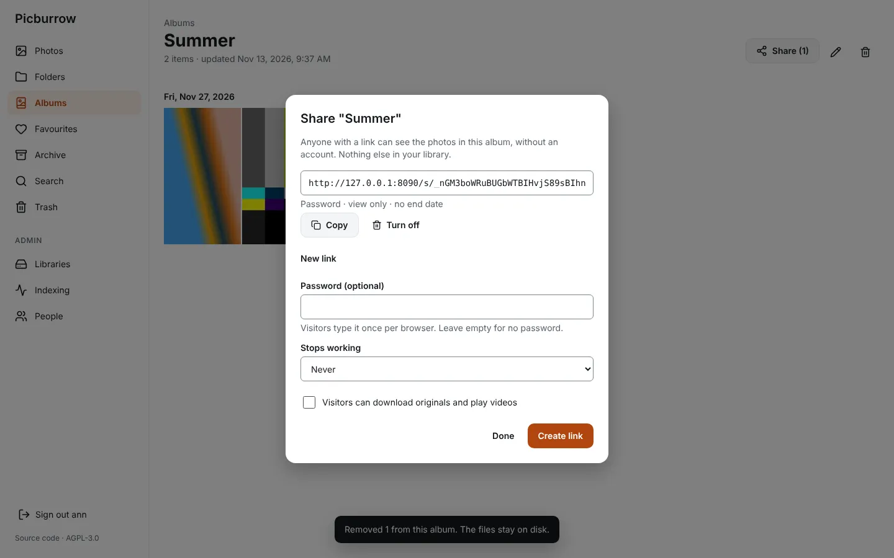
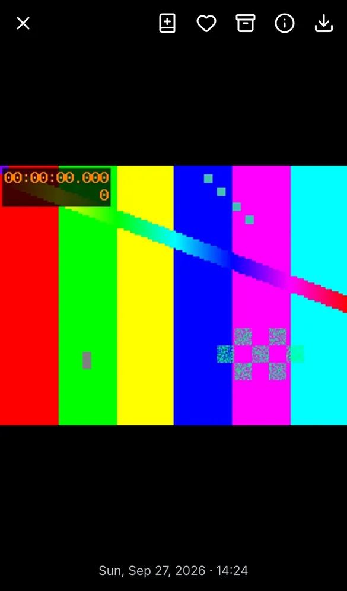

Your phone photos, as a timeline, on a 1 GB Raspberry Pi.
Picburrow is one small program that turns the photo folders you already have into a timeline you can scroll on your phone. No Docker, no database server. It only reads your photos.


Looking at your own photos shouldn't take a server farm.
Too many moving parts
A photo gallery at home usually means containers, a database server and a cache to install, update and repair, just to look at pictures.
Too heavy for a small board
Those setups want several gigabytes of memory, and their constant writes wear out a Pi's SD card.
How it works
Install
One command on 64-bit Raspberry Pi OS. It brings what it needs and starts by itself.
Point it at your photos
Open the Pi's address in a browser, make your account and pick the folder your phone backups land in.
Scroll
Your photos appear by day, newest first. Add Picburrow to your phone's home screen and it opens like an app.
Small on purpose
- One program, one file of data
- No containers, no database server, no cache: one program and a SQLite file.
- One-command install
- The package sets up the service, a system user and the image tools for you.
- Fits in 1 GB
- About 20 MB for the program, 100–140 MB while making previews in our tests. Previews are made one at a time, so a big photo can't starve the board.
- Looks after your SD card
- Tells you if its data sits on the SD card, with the one-line fix.
- Safe upgrades
- Before an upgrade changes its database, it saves a copy and keeps the last three.
- The whole family, no paid tier
- Give each person an account, with their own folder or sharing yours (same photos and favourites, nothing indexed twice). Nothing is behind a paid plan.
- Full camera details
- Aperture, shutter speed, ISO, focal length and flash, next to every photo.
- Rate many at once
- Pick photos and give them stars in one go.
- Your folders, untouched
- It reads your folders as they are. Nothing is moved, renamed or rewritten.
Also: a date scrubber for jumping through years, a full-screen viewer you can swipe, a random slideshow that keeps the screen on like a photo frame and can start by itself when the screen is left alone, live photos, an On this day page with photos from today's date in earlier years, folders, albums, share links with a password and an end date, search by name, date and type, favourites, archive and trash. Light and dark, phone and desktop.


Price
Free
All of it, for everyone in your home. Picburrow is free software under the GNU AGPL v3: you can use it, change it and share it.
- No paid plan and no locked features
- No account with us
- It never calls home: your photos and your data stay on your Pi
Install
On 64-bit Raspberry Pi OS (Pi 3, 4 or 5), download the .deb from the releases page, then:
sudo apt install ./picburrow_0.1.6_arm64.debOpen http://<your-pi>:8080, make your account and pick your photo folder. Put Picburrow's data on a USB drive or SSD rather than the SD card; the README shows how.
Questions
Will it run on my Pi 3?
It is built for 64-bit Raspberry Pi OS on a Pi 3, 4 or 5 with 1 GB of memory, and stayed well under that on a 64-bit test machine. Testing on real Pi boards is still in progress, so please tell us what you see.
Does it change my photos?
No. It only reads them. Its own data (previews, albums, favourites) lives in a separate folder.
How do photos get from my phone to the Pi?
With the sync app you already use: Syncthing, your NAS's app, anything that copies files into a folder. Picburrow shows whatever lands there, within about 15 minutes.
Can I move over from another photo app?
If that app keeps your originals in normal folders, point Picburrow at them. Albums and faces from other apps are not imported.
Does it recognise faces, or search for "beach"?
No, on purpose. Those need several gigabytes of memory, which is exactly what Picburrow exists to avoid.
Can I see my photos away from home?
Yes. The easiest safe way is Tailscale: a free app on the Pi and on your phone, about ten minutes, and nothing is opened to the internet. Picburrow has no HTTPS of its own, so don't open its port straight to the internet. Step-by-step guide.
iPhone photos (HEIC) and live photos?
Yes. HEIC previews are made with libvips, and live photos play their motion clip. So far this is tested with generated files; reports from real iPhone libraries are very welcome.
What does it cost to run?
Nothing beyond your Pi and your disk. There is no paid plan.